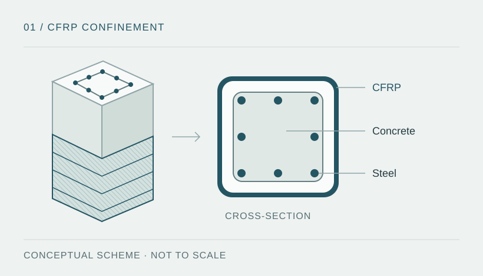

Technical problem and objective
Passive confinement with carbon fibre can modify the inelastic response of reinforced concrete columns. The modelling task is to represent confinement and distinguish its effects on strength, deformation capacity and stiffness.
Objective: compare the study column's lateral response under BASE and CFRP conditions, using a nonlinear model calibrated against a reference test. Conclusions relate to the particular conditions described in the research.

Model and calibration
- Fibre-section modelling with concrete core and cover, longitudinal reinforcement and distinct constitutive relationships.
- Use of the Concrete04 material for both conditions, with equivalent confinement in the strengthened case.
- Calibration against column C7, attributed in the project documentation to Nickelson and colleagues (2022). The complete citation and test records are not included; the attribution has not been independently confirmed.
- BASE/CFRP comparison of lateral force, stiffness, drift and energy, with explicit model assumptions.
Analysis workflow
- Define the model: geometry, materials, axial load, boundary conditions and section discretisation.
- Apply the cyclic protocol: organise displacement targets and record response and convergence conditions.
- Calibrate the reference condition: compare numerical response with experimental records and evaluate the error.
- Compare the case-study column: run the BASE and CFRP scenarios and distinguish comparisons at equal drift from comparisons between peak values.
- Document the scope: retain parameters, calibration criteria, outputs and limitations for subsequent review.
This procedure summarises the work described in the project documents; the files needed to execute it are not part of this portfolio.
Reported results
The following values come from the project documentation. They have not been independently verified using source files or raw data available in this repository.
Reported positive peak forces are approximately 675 kN (BASE) and 732 kN (CFRP), reached at different drift ratios. This comparison between peaks is not equivalent to the increase at +5% drift.
Reported initial stiffness changes from approximately 43.16 to 41.46 kN/mm. The reported model therefore does not show an increase in initial stiffness from strengthening.
Sources and scope
| Available in the portfolio | Required for reproduction |
|---|---|
| Methodological overview and reported figures. | Complete technical report, OpenSeesPy version and modelling parameters. |
| Conceptual strengthening schematic. | Scripts, raw data, loading protocol, convergence records and original response curves. |
| Provisional identification of the reference test. | Full bibliographic reference, provenance and permission to use the experimental data. |
Technical work
The study brings together nonlinear modelling, Python data processing and parameter calibration. Interpretation distinguishes peak force, response at equal drift and initial stiffness, rather than assuming that confinement improves every response measure equally.